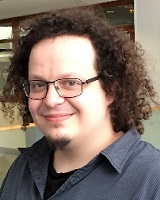

Antoine is the principal investigator for the project. He received the State Engineering degree from Telecom ParisTech, France, in 2005, and the M.Sc. degree in acoustics, computer science and signal processing applied to music (ATIAM) from the Université Pierre et Marie Curie (Paris VI), Paris, in 2005. He worked as a research engineer on source separation at Audionamix from 2007 to 2010 and obtained his PhD in electrical engineering at Telecom ParisTech in 2012. He is currently researcher at Inria, France. His research interests include audio source separation and machine learning.

Mathieu Fontaine
Mathieu received the Master degree in fundamental and applied mathematics from the University of Poitiers, France, in 2015. His personal interests in music as a sound engineer and musician, as well as in mathematics led him to start a thesis in 2016 on signal processing which he is currently pursuing at Inria, France. His research interests include probabilistic models for signal processing and machine learning.
Fabian-Robert Stöter
Fabian received the diploma degree in electrical engineering in 2012 from the Leibniz Universit\"{a}t Hannover and worked towards his Ph.D. degree in audio signal processing in the research group of B. Edler at the International Audio Laboratories Erlangen, Germany. He is currently researcher at Inria, France. His research interests include supervised and unsupervised methods for audio source separation and signal analysis of highly overlapped sources.
Research collaborators
In the context of the KAMoulox project, many collaborations were made with the academia. Here are the institution with whom we co-authored papers